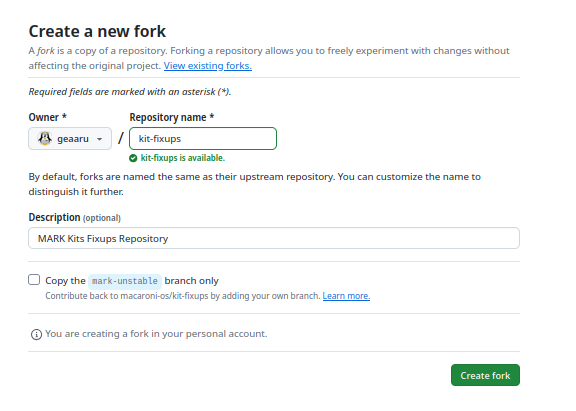
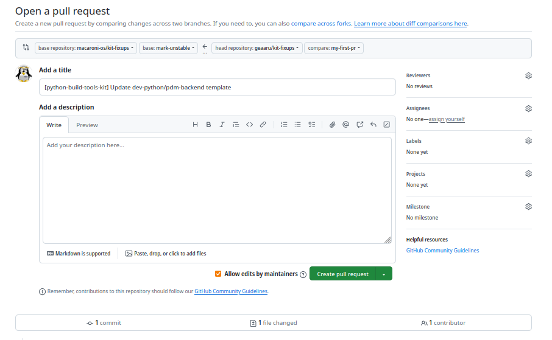

🏄 Became a Contributor #
Macaroni OS is here thanks to the hard work done in the free time from all Macaroni team, time that is limited and without the support of contributors through PR will be hard keep the OS updated and improve.
Any help is welcome, so, if you want support us also just testing the tree will be helpful. Instead, if you want to help the development and the evolution of Macaroni you can start with contribute to our kit-fixups repository where are present the specs of our autogen for mark-devkit tool.
We suggest to read with attention the Stability Levels to correctly understand the releases workflow and where create PRs for new packages.
We will explain what are the start steps to have easily an environment where test generated ebuilds.
👷 Prepare the rootfs #
The main thing to start is prepare a working environment. If you think to work more in server/container feature we suggest to use an LXD container or an Incus container that is easy to drop and recreate. In alternative you can also work with Docker container too.
An additional possibility is using chroot and setup your rootfs with anise but we will describe
this step in a specific chapter.
We suggest to read this Tutorial of the LXD Compose project in order to setup LXD/Incus if you don’t know how to do that.
If you want to work on Desktop stuff or you prefer a VM, we suggest to install a VM using QEMU (and libvirtd) or Virtualbox. Virtualbox has a lot of issues with 3D Acceleration so probably the best option is QEMU with KVM accelleration and if you have multiple GPU using passthrought mode inside the VM. Choice your prefer ISO with Mark suffix because they are already with right anise subsets from the Download section.
So, here we follow the Incus path for the presentation but the configuration steps could be used for all solutions.
First, create the local or remote container:
$> incus launch -p default macaroni:macaroni/mark-unstable my-mark-unstable -p default
In the example, is used the mark-unstable image but you can use mark-xl or any other MARK images
based on your requirements.
Second, setup your MARK tree:
$> incus exec my-mark-unstable bash
my-mark-unstable / # ego sync
...
Check your ego profile and set your mix-ins:
my-mark-unstable / # ego profile list
=== arch: ===
arm-32bit, arm-64bit, riscv-64bit, x86-32bit, (x86-64bit*), x86-64bit-papa
=== build: ===
current, (mark*), musl, next
=== subarch: ===
amd64-bulldozer, amd64-excavator, amd64-jaguar, amd64-k10
amd64-k8, amd64-k8+sse3, amd64-piledriver, amd64-pumaplus
amd64-steamroller, amd64-zen, amd64-zen2, amd64-zen3, atom_64
btver1_64, core-avx-i, core2_64, corei7, generic_64*, generic_64-v2
generic_64-v3, generic_64-v4, intel64-alderlake, intel64-broadwell
intel64-haswell, intel64-ivybridge, intel64-nehalem, intel64-rocketlake
intel64-sandybridge, intel64-silvermont, intel64-skylake, intel64-skylake-avx512
intel64-tremont, intel64-westmere, native_64, nocona, opteron_64
xen-pentium4+sse3_64
=== flavor: ===
core*, desktop, hardened, minimal, server, workstation
=== mix-ins: ===
X, amazon-ec2, audio, btrfs, console-extras, dvd, encrypted-root
gfxcard-amdgpu, gfxcard-ancient-ati, gfxcard-intel, gfxcard-intel-classic
gfxcard-intel-iris, gfxcard-kvm, gfxcard-nouveau, gfxcard-nvidia
gfxcard-nvidia-legacy, gfxcard-older-ati, gfxcard-panfrost
gfxcard-radeon, gfxcard-raspi4, gfxcard-vmware, gnome, hardened
ime-backend-anthy, ime-backend-bamboo, ime-backend-chewing
ime-backend-hangul, ime-backend-libpinyin, ime-backend-m17n
ime-backend-mozc, ime-backend-rime, ime-backend-skk, ime-backend-unikey
ime-backends-chinese, ime-backends-japanese, ime-backends-korean
ime-backends-table, ime-backends-vietnamese, kde-plasma-5
kerberos, kernel-bookworm, kernel-forky, kernel-funtoo, kernel-sid
kernel-trixie, lvm-root, lxqt, mdadm-root, media, media-pro
mediadevice-audio-consumer, mediadevice-audio-pro, mediadevice-base
mediadevice-video-consumer, mediadevice-video-pro, mediaformat-audio-common
mediaformat-audio-extra, mediaformat-gfx-common, mediaformat-gfx-extra
mediaformat-video-common, mediaformat-video-extra, no-emul-linux-x86
no-systemd, openvz-host, print, pulseaudio, python3-only, selinux
stage1, vmware-guest, wayland, xfce
my-mark-unstable / # ego profile mix-ins +btrfs +X
=== Enabled Profiles: ===
arch: x86-64bit
build: mark
subarch: generic_64
flavor: core
mix-ins: X
mix-ins: btrfs
Updating profiles at /etc/portage/make.profile/parent...
my-mark-unstable / #
Considering that normally the containers are created unprivileged remember to disable sandbox features.
$> export FEATURES="-sandbox -usersandbox -ipc-sandbox -pid-sandbox -network-sandbox"
$> # or setting this variable on /etc/portage/make.conf
$> echo 'FEATURES="-sandbox -usersandbox -ipc-sandbox -pid-sandbox -network-sandbox"' >> /etc/portage/make.conf
To speedup solver it’s always better rebuild metadata cache after the sync:
my-mark-unstable / # Prepare the coffee... it will takes time
my-mark-unstable / # for i in $(ls -1 /var/git/meta-repo/kits/) ; do egencache --update --repo=$i ; done
my-mark-unstable / # Fix onwner of the metadata directories
my-mark-unstable / # chown portage:portage -R /var/git/meta-repo/
And finally you can test your MARK rootfs with:
my-mark-unstable / # emerge dev-libs/libsodium -pv
These are the packages that would be merged, in order:
Calculating dependencies... done!
[ebuild N ] dev-libs/libsodium-1.0.18:0/23::dev-kit USE="asm urandom -minimal -static-libs" CPU_FLAGS_X86="-aes -sse4_1" 1875 KiB
Total: 1 package (1 new), Size of downloads: 1875 KiB
my-mark-unstable / # emerge dev-libs/libsodium -j
Calculating dependencies... done!
>>> Verifying ebuild manifests
>>> Emerging (1 of 1) dev-libs/libsodium-1.0.18::dev-kit
>>> Installing (1 of 1) dev-libs/libsodium-1.0.18::dev-kit
>>> Recording dev-libs/libsodium in "world" favorites file...
>>> Jobs: 1 of 1 complete Load avg: 1.12, 0.31, 0.11
>>> Auto-cleaning packages...
>>> No outdated packages were found on your system.
* GNU info directory index is up-to-date.
Later, you need to install all the software needed to autogen packages or through emerge:
my-mark-unstable / # emerge mark-devkit j2cli nodejs dev-lang/go anise-portage-converter pip git pkgs-checker minio-client -pv
These are the packages that would be merged, in order:
Calculating dependencies... done!
[ebuild N ] dev-lang/go-1.24.7::lang-kit USE="amd64 (-arm64) (-armv6)" 106816 KiB
[ebuild N ] app-admin/anise-portage-converter-0.16.3-r1::mark-kit 10347 KiB
[ebuild N ] dev-util/pkgs-checker-0.16.0-r1::mark-kit 3530 KiB
[ebuild N ] dev-util/mark-devkit-0.23.0::mark-kit 11265 KiB
[ebuild N ] net-fs/minio-client-2025.08.13::net-kit 73510 KiB
[ebuild N ] dev-libs/libyaml-0.2.5::dev-kit USE="-doc -static-libs -test" 84 KiB
[ebuild U ] dev-vcs/git-2.49.0::dev-kit [2.48.1::dev-kit] USE="blksha1 curl gpg iconv nls pcre pcre-jit perl threads webdav -cgi -cvs -doc -emacs -gnome-keyring -highlight -libressl -perforce (-ppcsha1) -test -tk -xinetd" PYTHON_SINGLE_TARGET="python3_9 -python2_7 -python3_10 -python3_7 -python3_8" PYTHON_TARGETS="python3_9 -python2_7 -python3_10 -python3_7 -python3_8" 8171 KiB
[ebuild N ] net-libs/nodejs-22.16.0::lang-kit 120117 KiB
[ebuild N ] dev-python/pyyaml-6.0.2::python-modules-kit USE="libyaml -examples" PYTHON_TARGETS="python3_9 -pypy3 -python3_10 -python3_7 -python3_8" 128 KiB
[ebuild N ] dev-python/pip-25.1.1::python-modules-kit USE="-vanilla" PYTHON_TARGETS="python3_9 -python3_10 -python3_7 -python3_8" 1895 KiB
[ebuild N ] dev-python/j2cli-0.3.11::python-modules-kit USE="-doc -test" PYTHON_TARGETS="python3_9 -python3_10 -python3_7 -python3_8" 0 KiB
Total: 11 packages (1 upgrade, 10 new), Size of downloads: 335860 KiB
Or with anise to speedup setup through the following commands:
my-mark-unstable / # anise i --sync-repos anise-portage-converter
🚀 Luet 0.41.1-geaaru-gc4815024d03bc88794c76a165ba4018ae07296a3 2024-09-12 09:51:12 UTC - go1.22.5
ℹ️ Repository: macaroni-commons is already up to date.
ℹ️ Repository: mottainai-stable is already up to date.
ℹ️ Repository: macaroni-terragon is already up to date.
ℹ️ Repository: geaaru-repo-index is already up to date.
🏠 Repository: geaaru-repo-index Revision: 15 - 2025-01-04 18:10:44 +0000 -00
🏠 Repository: macaroni-commons Revision: 281 - 2025-09-20 16:58:24 +0000 -00
🏠 Repository: macaroni-terragon Revision: 573 - 2025-04-02 16:39:33 +0000 -00
🏠 Repository: mottainai-stable Revision: 187 - 2025-08-28 17:48:39 +0000 -00
🧠 Solving install tree...
🍦 [ 1 of 1] [N] macaroni/anise-portage-converter::mottainai-stable - 0.16.3
💂 Checking for file conflicts...
✔️ No conflicts found (executed in 8 µs).
Do you want to continue with this operation? [y/N]: y
🚚 Downloading 1 packages...
📦 [ 1 of 1] macaroni/anise-portage-converter::mottainai-stable - 0.16.3 # downloaded ✔
🧠 Sorting 1 packages operations...
🍻 Executing 1 packages operations...
🍰 [ 1 of 1] macaroni/anise-portage-converter::mottainai-stable - 0.16.3 # installed ✔
my-mark-unstable / # anise-portage-converter sync
[ 3/ 320] [app-admin/metalog] Package with version 20200113 not found on anise database.
[ 3/ 320] [app-admin/metalog] 20200113 added ✔️
...
my-mark-unstable / # anise i --cleanup mark-devkit j2cli nodejs go pip git pkgs-checker minio-client
🚀 Luet 0.41.1-geaaru-gc4815024d03bc88794c76a165ba4018ae07296a3 2024-09-12 09:51:12 UTC - go1.22.5
🏠 Repository: geaaru-repo-index Revision: 15 - 2025-01-04 18:10:44 +0000 -00
🏠 Repository: macaroni-commons Revision: 281 - 2025-09-20 16:58:24 +0000 -00
🏠 Repository: macaroni-terragon Revision: 573 - 2025-04-02 16:39:33 +0000 -00
🏠 Repository: mottainai-stable Revision: 187 - 2025-08-28 17:48:39 +0000 -00
🚧 warning dev-vcs/git already installed.
🧠 Solving install tree...
🍦 [ 1 of 8] [N] dev-lang/go::macaroni-terragon - 1.24.1
🍦 [ 2 of 8] [N] dev-python/j2cli::macaroni-terragon - 0.3.11+1
🍦 [ 3 of 8] [N] dev-python/pip::macaroni-terragon - 25.0.1
🍦 [ 4 of 8] [N] dev-python/pyyaml::macaroni-terragon - 6.0.2+1
🍦 [ 5 of 8] [N] dev-util/mark-devkit::mottainai-stable - 0.23.0
🍦 [ 6 of 8] [N] dev-util/pkgs-checker::mottainai-stable - 0.16.0
🍦 [ 7 of 8] [N] net-fs/minio-client::macaroni-terragon - 2025.03.12
🍦 [ 8 of 8] [N] net-libs/nodejs::macaroni-terragon - 22.14.0
💂 Checking for file conflicts...
✔️ No conflicts found (executed in 48280 µs).
Do you want to continue with this operation? [y/N]: y
🚚 Downloading 8 packages...
📦 [ 1 of 8] dev-python/j2cli::macaroni-terragon - 0.3.11+1 # downloaded ✔
📦 [ 2 of 8] dev-python/pip::macaroni-terragon - 25.0.1 # downloaded ✔
📦 [ 3 of 8] net-libs/nodejs::macaroni-terragon - 22.14.0 # downloaded ✔
📦 [ 4 of 8] dev-util/mark-devkit::mottainai-stable - 0.23.0 # downloaded ✔
📦 [ 5 of 8] dev-util/pkgs-checker::mottainai-stable - 0.16.0 # downloaded ✔
📦 [ 6 of 8] net-fs/minio-client::macaroni-terragon - 2025.03.12 # downloaded ✔
📦 [ 7 of 8] dev-lang/go::macaroni-terragon - 1.24.1 # downloaded ✔
📦 [ 8 of 8] dev-python/pyyaml::macaroni-terragon - 6.0.2+1 # downloaded ✔
🧠 Sorting 8 packages operations...
🍻 Executing 8 packages operations...
[/usr/lib/go/test/fixedbugs/issue27836.dir/Þfoo.go] Ignoring xattr path not supported by the underlying filesystem: operation not supported
[/usr/lib/go/test/fixedbugs/issue27836.dir/Þmain.go] Ignoring xattr path not supported by the underlying filesystem: operation not supported
🍰 [ 1 of 8] dev-lang/go::macaroni-terragon - 1.24.1 # installed ✔
🍰 [ 2 of 8] dev-python/pip::macaroni-terragon - 25.0.1 # installed ✔
🍰 [ 3 of 8] dev-python/pyyaml::macaroni-terragon - 6.0.2+1 # installed ✔
🍰 [ 4 of 8] dev-util/mark-devkit::mottainai-stable - 0.23.0 # installed ✔
🍰 [ 5 of 8] dev-util/pkgs-checker::mottainai-stable - 0.16.0 # installed ✔
🍰 [ 6 of 8] net-fs/minio-client::macaroni-terragon - 2025.03.12 # installed ✔
🍰 [ 7 of 8] net-libs/nodejs::macaroni-terragon - 22.14.0 # installed ✔
🍰 [ 8 of 8] dev-python/j2cli::macaroni-terragon - 0.3.11+1 # installed ✔
🎊 All done.
Cleaned: 9 packages.
Compliments, your rootfs is ready!
🧠 Prepare your kit-fixups fork
#
In order to create new autogen and/or modify existing autogen you need to have your
kit-fixups fork.
To do this go to Macaroni kit-fixups repository and push to Fork button and later you will redirect to the Create a new fork webpage.

If you want work on multiple branches/releases unset the flag from
Copy the mark-unstable branch only.
Push on Create fork button and your fork will be ready in few seconds.
We suggest to add an SSH Key to work easily with your fork and you need
to have a Github token to work with mark-devkit. To create a Github token
you need to go on your Github Profile Settings → Developer settings → Personal access tokens → Tokens.
To generate your ssh key for this task:
my-mark-unstable / # ssh-keygen -t ed25519
Generating public/private ed25519 key pair.
Enter file in which to save the key (/root/.ssh/id_ed25519): /root/.ssh/id_ed25519_macaroni
Enter passphrase for "/root/.ssh/id_ed25519_macaroni" (empty for no passphrase):
Enter same passphrase again:
Your identification has been saved in /root/.ssh/id_ed25519_macaroni
Your public key has been saved in /root/.ssh/id_ed25519_macaroni.pub
The key fingerprint is:
SHA256:0ixrou2sCBxfw/xXsRqviKheJl8v54XwaYu0ty3RdRw root@my-mark-unstable
The key's randomart image is:
+--[ED25519 256]--+
| |
| E |
| .. . |
| o o .oo |
| . *o S..o. |
|. o . ==o.= |
|.o +.oo*.+ . |
|..=+++*+* . |
|oo+=++=*oo |
+----[SHA256]-----+
Get your public key:
my-mark-unstable ~/.ssh # cat /root/.ssh/id_ed25519_macaroni.pub
and store the content on your Github profile under Settings → SSH and GPG keys.
Now configure the use of the custom SSH key for the github domain:
my-mark-unstable / # echo "
Host github.com
IdentityFile ~/.ssh/id_ed25519_macaroni
" > /root/.ssh/config
Ensure that your user is correctly configured for git or set global config with your email and name:
$> git config --global user.email "geaaru@macaronios.org"
$> git config --global user.name "Daniele Rondina"
You can now clone your repository locally in the created repository or in your local environment if you prefer to use the container only for testing new ebuild.
We consider to use the container to generate also the new ebuilds, so these the next steps:
my-mark-unstable / # git clone git@github.com:<YOUR-USER>/kit-fixups.git /kit-fixups
Cloning into '/kit-fixups'...
remote: Enumerating objects: 111095, done.
remote: Counting objects: 100% (99/99), done.
remote: Compressing objects: 100% (66/66), done.
remote: Total 111095 (delta 26), reused 70 (delta 14), pack-reused 110996 (from 2)
Receiving objects: 100% (111095/111095), 86.56 MiB | 16.33 MiB/s, done.
Resolving deltas: 100% (51086/51086), done.
In order to work on a specific feature it’s better create a branch for that task that will be used to create the PR:
my-mark-unstable / # cd /kit-fixups/
my-mark-unstable /kit-fixups # git branch my-first-pr
my-mark-unstable /kit-fixups # git checkout my-first-pr
Switched to branch 'my-first-pr'
Compliments, your kit-fixups fork is ready for the enjoy!
🏰 Generate new ebuilds with autogen-thin
#
We suggest to read the mark-devkit documentation to understand how to use it in the
different use cases and see the existing autogens to understand the logic.
Like fast summary, under the kit-fixups repository users find a directory for any
kit available. Under every kit are present one or two directories: autogen.kit.d, the
directory where are defined the autogen, and the directory merge.kit.d where are present
the merge kit specs needed together with the autogen specs. It’s also possible that is present
only the directory merge.kit.d, this happens normally in the testing and stable branches
where is used only the merge kits feature of mark-devkit to add new ebuilds from another
branch or repository as source.
In order to keep more easy this tutorial from a first read, to complete this tutorial we will use an existing autogen where does a change and share what are the needed steps to test the result and later create the PR.
For python packages we keep for now specs more similar to Funtoo metatools using the j2cli
as template engine that uses Jinja engine. This is been a choice to help ex-Funtoo
contributors to keep things more simple, but we suggest to use the Helm or Pongo engine that
is built-in inside the mark-devkit and works without external tools. The j2cli doesn’t work
with new Python releases and is no more maintained and we will need more time to create our
fork of this tool used that is also used on lxd-compose project.
As example we use the python-build-tools-kit and we will try to change the pdm-backend package that is an easy package without a custom template file.
These the command to generate the ebuild of the pdm-backend package to last available version:
my-mark-unstable /kit-fixups/ # cd /kit-fixups/python-build-tools-kit/
my-mark-unstable /kit-fixups/python-build-tools-kit # # generate the ebuild of the package pdm-backend
my-mark-unstable /kit-fixups/python-build-tools-kit # mark-devkit autogen-thin --specfile autogen.kit.d/base.yml --kitfile merge.kit.d/base.yml --pkg pdm-backend
😷 Loading specfile autogen.kit.d/base.yml
🏰 Work directory: workdir
🚀 Target Kit: python-build-tools-kit
🏭 [pep517_standalone] Processing definition ...
🏭 [pep517_standalone] Processing atom pdm-backend...
🍕 [pdm-backend] For package dev-python/pdm-backend selected version 2.4.5
🎉 All done
The doit command is an alias of autogen-thin command to help ex-Funtoo users on MARK migration.
Without define the working directory mark-devkit using workdir directory to generate the files:
my-mark-unstable /kit-fixups/python-build-tools-kit # tree workdir/
workdir/
├── downloads
│ └── pdm_backend-2.4.5.tar.gz
└── sources
└── python-build-tools-kit
└── dev-python
└── pdm-backend
├── Manifest
└── pdm-backend-2.4.5.ebuild
5 directories, 3 files
So, the used command to be more clear is:
mark-devkit doit --specfile autogen.kit.d/base.yml --kitfile merge.kit.d/base.yml --pkg pdm-backend
and we suggest to use the flags --show-values and optionally --debug to better
understand the generated variables during the development of new autogen.
In the example the autogen uses Pypi API, but normally to use Github API you need export the GITHUB_TOKEN variable with your token before execute the
autogen-thincommand.
Now to complete the example we will add a post install message for the user inside the ebuild of
this package editing the file autogen.kit.d/base.yml to add the pkg_postinst section:
pep517_standalone:
generator: builtin-pypi
defaults:
category: dev-python
template: "../../templates/pypi-generic-helm.tmpl"
vars:
du_pep517: standalone
python_compat: "python3+"
packages:
- pdm-backend:
pypi_name: pdm_backend
pydeps:
py:all:runtime:
- packaging >= 24.0
- editables
- importlib_metadata
- pyproject-metadata
- tomli
- tomli-w
py:all:tool:
- packaging >= 24.0
- editables
- importlib_metadata
- pyproject-metadata
- tomli
- tomli-w
vars:
body: |
src_prepare() {
rm -r src/pdm/backend/_vendor || die
find -name '*.py' -exec sed \
-e 's:from pdm\.backend\._vendor\.:from :' \
-e 's:from pdm\.backend\._vendor ::' \
-e 's:import pdm\.backend\._vendor\.:import :' \
-i {} + || die
distutils-r1_src_prepare
}
pkg_postinst() {
einfo "THIS IS MY FIRST AUTOGEN!"
}
After rerun the autogen-thin command will be possible copy the generate ebuild and
testing the new package:
my-mark-unstable /kit-fixups/python-build-tools-kit # rm -rf /var/git/meta-repo/kits/python-modules-kit/dev-python/pdm-backend/
my-mark-unstable /kit-fixups/python-build-tools-kit # cp workdir/sources/python-build-tools-kit/dev-python/pdm-backend/ /var/git/meta-repo/kits/python-modules-kit/dev-python/pdm-backend/ -rf
and now testing the new ebuild:
my-mark-unstable /kit-fixups/python-build-tools-kit # emerge pdm-backend -pv
These are the packages that would be merged, in order:
Calculating dependencies... done!
[ebuild N ] dev-python/pyproject-metadata-0.9.1::python-modules-kit PYTHON_TARGETS="python3_9 -python3_10 -python3_7 -python3_8" 38 KiB
[ebuild N ] dev-python/tomli-w-1.2.0::python-modules-kit PYTHON_TARGETS="python3_9 -python3_10 -python3_7 -python3_8" 8 KiB
[ebuild N ] dev-python/pdm-backend-2.4.5::python-modules-kit PYTHON_TARGETS="python3_9 -python3_10 -python3_7 -python3_8" 116 KiB
Total: 3 packages (3 new), Size of downloads: 161 KiB
my-mark-unstable /kit-fixups/python-build-tools-kit # emerge pdm-backend
...
>>> Installing (1 of 1) dev-python/pdm-backend-2.4.5::python-modules-kit
* THIS IS MY FIRST AUTOGEN!
>>> Recording dev-python/pdm-backend in "world" favorites file...
>>> Auto-cleaning packages...
>>> No outdated packages were found on your system.
* GNU info directory index is up-to-date.
You autogen is been tested and the change could be committed in your branch.
Compliments 🎊! The change is ready for the PR!
🚚 Prepare the Pull Request #
We can finally follow the final steps in order to add your contribution.
On create the commit it’s important follow these best practices:
1. add the kit name as prefix of the commit message
2. if the change is related to an existing bug it could be good to add the annotation Closes
or Bugs inside the comment description like described in the README of the mark-issues
repository.
3. check the commit change to verify that there aren’t debug things not needed
my-mark-unstable /kit-fixups/python-build-tools-kit # git diff .
diff --git a/python-build-tools-kit/autogen.kit.d/base.yml b/python-build-tools-kit/autogen.kit.d/base.yml
index e9ddd340e..3ca50b52a 100644
--- a/python-build-tools-kit/autogen.kit.d/base.yml
+++ b/python-build-tools-kit/autogen.kit.d/base.yml
@@ -35,4 +35,8 @@ pep517_standalone:
-i {} + || die
distutils-r1_src_prepare
}
+ pkg_postinst() {
+ einfo "THIS IS MY FIRST AUTOGEN!"
+ }
+
In this case there isn’t an issue, so the commit could be something simple:
my-mark-unstable /kit-fixups/python-build-tools-kit # git commit -m "[python-build-tools-kit] Update dev-python/pdm-backend template" .
[my-first-pr a58e2a599] [python-build-tools-kit] Update dev-python/pdm-backend template
1 file changed, 4 insertions(+)
Eventually, you can check again what is been committed with:
my-mark-unstable /kit-fixups/python-build-tools-kit # git show
commit a58e2a599aaae01fb2152ade501159ba0b69c775 (HEAD -> my-first-pr)
Author: Daniele Rondina <geaaru@macaronios.org>
Date: Sat Sep 27 17:42:22 2025 +0000
[python-build-tools-kit] Update dev-python/pdm-backend template
diff --git a/python-build-tools-kit/autogen.kit.d/base.yml b/python-build-tools-kit/autogen.kit.d/base.yml
index e9ddd340e..3ca50b52a 100644
--- a/python-build-tools-kit/autogen.kit.d/base.yml
+++ b/python-build-tools-kit/autogen.kit.d/base.yml
@@ -35,4 +35,8 @@ pep517_standalone:
-i {} + || die
distutils-r1_src_prepare
}
+ pkg_postinst() {
+ einfo "THIS IS MY FIRST AUTOGEN!"
+ }
+
We can push the commit on your kit-fixups fork:
my-mark-unstable /kit-fixups/python-build-tools-kit # git push
fatal: The current branch my-first-pr has no upstream branch.
To push the current branch and set the remote as upstream, use
git push --set-upstream origin my-first-pr
To have this happen automatically for branches without a tracking
upstream, see 'push.autoSetupRemote' in 'git help config'.
my-mark-unstable /kit-fixups/python-build-tools-kit # git push --set-upstream origin my-first-pr
Enumerating objects: 9, done.
Counting objects: 100% (9/9), done.
Delta compression using up to 8 threads
Compressing objects: 100% (4/4), done.
Writing objects: 100% (5/5), 524 bytes | 524.00 KiB/s, done.
Total 5 (delta 2), reused 0 (delta 0), pack-reused 0 (from 0)
remote: Resolving deltas: 100% (2/2), completed with 2 local objects.
remote:
remote: Create a pull request for 'my-first-pr' on GitHub by visiting:
remote: https://github.com/geaaru/kit-fixups/pull/new/my-first-pr
remote:
To github.com:geaaru/kit-fixups.git
* [new branch] my-first-pr -> my-first-pr
branch 'my-first-pr' set up to track 'origin/my-first-pr'.
You can return to your Github repository and click on Compare & pull request that will show a webpage like this:

where you can add in the description a note with the log of the autogen-thin
output and of the emerge of the package that certificate the test.